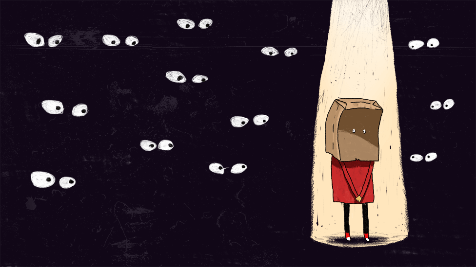

Busque ajuda cedo!
Por se tratar de uma doença crônica o início é lento e gradual, por isso, deve ser tratada com antecedência, ainda na infância/adolescência.

Vittude
Clique na imagem para acesasr Vittude! Uma plataforma que conecta pacientes a profissionais de saúde mental, incluindo psicólogos.